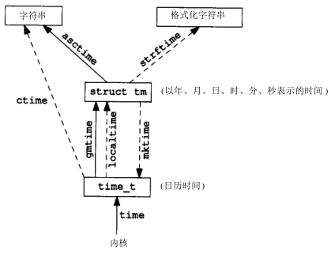

系统文件
Table of Contents
有很多操作需要使用一些与系统有关的数据文件，例如： 口令文件/etc/passwd和组文件/etc/group就是经常由多种程序使用的两个文件 用户每次登录入UNIX系统，以及每次执行 ls -l 命令时都要使用口令文件
对于这些数据文件的 可移植函数 是本章的主题。本章也包括了 系统标识函数 、 时间和日期函数 等
passwd文件
UNIX口令文件包含了表6-1中所示的各字段，这些字段包含在 <pwd.h> 中定义的 passwd 结构中
| 说明 | struct passwd成员 | POSIX.1 |
| 用户名 | char *pw_name | • |
| 加密口令 | char *pw_passwd | |
| 数值用户ID | uid_t pw_uid | • |
| 数值组ID | gid_t pw_gid | • |
| 注释字段 | char *pw_gecos | |
| 初始工作目录 | char *pw_dir | • |
| 初始shell | char *pw_shell | • |
口令文件是 /etc/passwd ，这是是一个文本文件。每一行包含表6-1中所示的7个字段，字段之间用冒号相分隔
$ cat /etc/passwd root:jheVopR58x9Fx:0:1:The superuser:/:/bin/sh nobody:*:65534:65534::/: stevens:3hKVD8R58r9Fx:224:20:Richard Stevens:/home/stevens:/bin/ksh
- 通常有一个登录项，其用户名为 root ，其用户 ID是0 (超级用户)
- 现代的Unix系统此文件往往不包含加密后的密码，而是存放在 /etc/shadow 中
- 口令文件中的某些字段可能是空
- 如果密码口令字段为空，这通常就意味着 该用户没有口令
- 空白注释字段不产生任何影响
- 空白shell字段则表示取系统默认值，通常是 /bin/sh
- 支持finger(1)命令的某些UNIX系统支持 注释字段中的附加信息 。其中，各部分之间都用 逗号 分隔：
- 用户姓名
- 办公室地点
- 办公室电话号码
- 家庭电话号码
- 如果里面注册的某个用户只打算用于 守护进程 之类而 不打算给予登录shell ，应将其 Home目录字段 设置为 /dev/null 或者 /bin/false 等
getpwuid, getpwnam
- getpwuid ：根据用户id 获取passwd记录
- getpwnam ：根据用户登录名 获取passwd记录
#include <sys/types.h> #include <pwd.h> /** * 根据用户id获取passwd记录 * * uid: 用户id * * return: 若成功则为 指向passwd结构的指针，若出错则为 NULL * */ struct passwd *getpwuid(uid_t uid); /** * 根据用户登录名获取passwd记录 * * name: 用户登录名 * * return: 若成功则为 指向passwd结构的指针，若出错则为 NULL * */ struct passwd *getpwnam(const char *name);
这两个函数都返回一个指向passwd结构的指针，该结构通常是在 相关函数内的静态变量 ， 只要调用相关函数，其内容就会被重写!
getpwuid由ls(1)程序使用，以便将包含在一个i节点中的数值用户ID映照为用户登录名 getpwnam在键入登录名时由login(1)程序使用
getpwent,setpwent,endpwent
有些程序要查看整个口令文件。下列三个函数则可用于此：
- getpwent：返回 passwd文件 下一个 记录项
- setpwent： 重置 getpwent的当前位置到最开始
endpwent： 关闭 getpwent打开的文件
#include <sys/types.h> #include <pwd.h> /** * 返回passwd文件下一个记录项 * * return: 若成功则为指向 passwd结构的指针，若出错或到达文件尾端则为 NULL * */ struct passwd *getpwent(void); /** * 重置getpwent的当前位置到最开始 * */ void setpwent(void); /** * 关闭getpwent打开的文件 * */ void endpwent(void);
在使用getpwent查看完口令文件后， 一定要调用endpwent关闭这些文件
getpwent知道什么时间它应当打开它所使用的文件，但是它并不能知道何时关闭这些文件
getpwnam的简易实现
- 在开始处调用setpwent是保护性的措施，以便在调用者在此之前已经调用过getpwent的情况下
- 重置有关文件使它们定位到文件开始处
getpwnam和getpwuid完成后不应使有关文件仍处于打开状态，所以应调用endpwent关闭它们
#include <sys/types.h> #include <pwd.h> #include <stddef.h> #include <string.h> static struct passwd *retrievePasswd(const char *name); int main(void) { char name[] = "klose"; struct passwd *ptr; ptr = retrievePasswd(name); if(NULL == ptr) err_sys("error retrieve passwd entry"); printf("work directory %s\n", ptr->pw_dir); printf("login shell %s\n", ptr->pw_shell); exit(0); } struct passwd *retrievePasswd(const char *name) { struct passwd *ptr; setpwent(); while((ptr = getpwent()) != NULL) if(0 == strcmp(name, ptr->pw_name) ) break; endpwent(); return ptr; }
shadow文件
某些系统将加密口令存放在另一个通常称为阴影口令 shadow 的文件中。该文件至少要包含 用户名 和 加密口令
与该口令相关的其他信息也可存放在该文件中
例如，具有阴影口令的系统经常要求用户在一定时间间隔后选择一个新口令，这被称之为口令时效
选择新口令的时间间隔长度经常也存放在阴影口令文件中
shadow文件相关接口：
#include <shadow.h> struct spwd *getspnam(const char *name); struct spwd *getspent(void); void setspent(void) void endspent(void);
阴影口令文件不应是一般用户可以读取的。仅有少数几个程序需要存取加密口令文件
例如login(1)和passwd(1)，这些程序常常设置-用户-ID为root
有了阴影口令后，普通口令文件/etc/passwd可由各用户自由读取
group文件
UNIX组文件包含了表6-2中所示字段，这些字段包含在<grp.h>中所定义的group结构中
| 说明 | struct group成员 | POSIX.1 |
| 组名 | char *gr_name | • |
| 加密口令 | char *gr_passwd | |
| 数字组ID | int gr_gid | • |
| 指向各用户名指针的数组 | char **gr_mem | • |
字段 gr_mem 是一个 指针数组 ，其中的指针 各指向一个属于该组的用户名 。该数组以 null 结尾
$ cat /etc/group root:x:0:root bin:x:1:root,bin,daemon daemon:x:2:root,bin,daemon sys:x:3:root,bin,adm adm:x:4:root,adm,daemon
getgrgid, getgrnam
- getgrgid ：根据组id 获取group记录
getgrnam ：根据组名字获取group记录
#include <sys/types.h> #include <grp.h> /** * 根据组id获取group记录 * * gid: 组id * * return: 若成功则为 指向group结构的指针，若出错则为 NULL * */ struct group *getgrgid(gid_t gid); /** * 根据组名字获取group记录 * * name: 组名字 * * return: 若成功则为指向 group结构的指针，若出错则为 NULL * */ struct group *getgrnam(const char *name);
如同对口令文件进行操作的函数一样，这两个函数通常也返回 指向一个静态变量的指针 ,在 每次调用时都重写该静态变量！
getgrent, setgrent, endgrent
- getgrent：返回group文件 下一个记录项
- setgrent： 重置 getgrent的当前位置到最开始
endgrent： 关闭 getgrent打开的文件
#include <sys/types.h> #include <grp.h> struct group *getgrent(void); void setgrent(void); void endgrent(void);
类似地调用getgrent后必须记得使用endgrent关闭！
附加组ID
现代的Unix系统 一个用户一般可以属于多个组 ，以下函数用来支持这种特性：
- getgroups ： 读取 当前进程所属用户 附加组ID表
- setgroups ： 设置 当前进程所属用户 附加组ID表
- initgroups ： 初始化 用户附加组ID表
#include <sys/types.h> #include <unistd.h> /** * 读取当前进程所属用户的附加组id表 * * gidsetsize: 最多添加到grouplist的附加组数量，如果为0，则grouplist不做修改 * grouplist: 附加组ID的数组 * * return：若成功则为 实际读取的附加组ID数量，若出错则为 -1 * */ int getgroups(int gidsetsize, gid_t grouplist][); /** * 设置当前进程所属用户的附加组id表 * * ngroup: grouplist中的元素个数 * grouplist: 要设置的附加组ID的数组 * * return: 成功返回 0，失败返回 -1 * */ int setgroups(int ngroups, const gid_t grouplist[]); /** * 初始化用户附加组id表 * * username: 用户登录名 * basegid: 用户默认主组ID * * return: 成功返回 0，失败返回 -1 * */ int initgroups(const char *username, gid_t basegid);
其他数据文件
- /etc/services ：记录 服务器网络服务
- /etc/protocols ：记录各种 网络协议
- /etc/networks ：记录各种 网卡信息
- /etc/hosts ：记录各种 域名信息
操作函数
一般情况下每个数据文件至少有三个函数:
- get函数：
- 读下一个记录 ，如果需要还 打开该文件
- 通常返回 指向一个结构的指针
- 当已达到文件尾端时返回 空指针
- 大多数get函数返回 指向一个静态存储类结构的指针 ，如果 要保存其内容，则需复制它
- set函数： 打开相应数据文件 (如果尚末打开)， 重置该文件到最初
- 如果希望在相应文件起始处开始处理，则调用此函数
- end函数： 关闭相应数据文件
- 在结束了对相应数据文件的读、写操作后， 总应调用此函数以关闭所有相关文件
| 说明 | 数据文件 | 头文件 | 结构 | 附加的关键字搜索函数 |
|---|---|---|---|---|
| 口令 | /etc/passwd | <pwd.h> | passwd | getpwnam,getpwuid |
| 组 | /etc/group | <grp.h> | group | getgrnam,getgrgid |
| 主机 | /etc/hosts | <netdb.h> | hostent | gethostbyname,gethostbyaddr |
| 网络 | /etc/networks | <netdb.h> | netent | getnetbyname,getnetbyaddr |
| 协议 | /etc/protocols | <netdb.h> | protoent | getprotobyname,getprotobynumber |
| 服务 | /etc/services | <netdb.h> | servent | getservbyname,getservbyport |
如果数据文件支持某种形式的关键字搜索，则也提供搜索具有指定关键字的记录的函数
登录统计
大多数UNIX系统都提供下列两个数据文件：
- utmp 文件： 记录当前登录进系统的各个用户 ，供 who(1) 程序使用
- wtmp 文件： 跟踪各个登录和注销事件 ，供 last(1) 程序使用
utmp文件位于 /var/run 目录下，wtmp文件位于 /var/log 目录下
$ ls -l /var/run/utmp -rw-rw-r-- 1 root utmp 4608 Feb 22 22:28 /var/run/utmp $ ls -l /var/log/wtmp -rw-rw-r-- 1 root utmp 20259072 Feb 22 22:28 /var/log/wtmp
utmp结构
struct utmp { char ut_line[8]; /* tty line: "ttyh0", "ttyd0", "ttyp0", ... */ char ut_name[8]; /* login name*/ long ut_time; /* time since epoch */ };
- 登录时 login程序 产生一个 utmp结构 ，然后将其写入到 utmp文件 中，同时也将其添加到 wtmp文件 中
- 注销时 init进程 将 utmp文件 中 相应的记录擦除 (每个字节都填以0)，并将一个 新记录添写 到 wtmp文件 中
- 读wtmp文件 中的该注销记录，其 ut_name字段 清除为0
- 在 系统再启动 时，以及 更改系统 时间和日期 的前后 ，都在 wtmp文件 中 添写特殊的记录项
系统标识
uname
uname 函数：返回与 主机和操作系统 有关的信息
#include <sys/utsname.h> /** * 与操作系统相关的信息读到指定的utsname结构指针中 * * name: 存放主机和操作系统相关信息的 utsname结构指针 * * return: 若成功则为 非负值，若出错则为 -1 * */ int uname(stuct ustname *name);
通过参数向其传递一个 utsname结构 的指针，然后该函数 填写此结构
utsname结构
utsname结构至少包括以下字段：
- sysname ： 内核名 ，如Linux
- nodename ： 主机名 ，这个字段基本上没有意义
- release ： 发行名 ，如 Ubuntu
- version ： 版本号 ，如 2.6.24
- machine ： 体系结构 ，如 i686
struct utsname { /* Name of the implementation of the operating system. */ char sysname[_UTSNAME_SYSNAME_LENGTH]; /* Name of this node on the network. */ char nodename[_UTSNAME_NODENAME_LENGTH]; /* Current release level of this implementation. */ char release[_UTSNAME_RELEASE_LENGTH]; /* Current version level of this release. */ char version[_UTSNAME_VERSION_LENGTH]; /* Name of the hardware type the system is running on. */ char machine[_UTSNAME_MACHINE_LENGTH]; //... };
utsname结构中的信息通常可用 uname(1) 命令打印
$ uname -a Linux gentoo 4.9.6-gentoo-r1 #1 SMP Sat Feb 4 17:28:48 CST 2017 x86_64 Intel(R) Core(TM) i3-2100 CPU @ 3.10GHz GenuineIntel GNU/Linux
gethostname
gethostname： 返回主机名 ，通常就是TCP/IP网络上主机的名字
#include <unistd.h> /** * 返回主机名 * * name: 读取主机名到 name字符串，字符串以 null结尾 * namelen: 数组长度 * * return: 若成功返回 0，若失败返回 -1 * */ int gethostname(char *name, int namelen);
<sys/param.h>中的常数 MAXHOSTNAMELEN 规定了此名字的最大长度(通常是64字节) 如果宿主机联接到TCP/IP网络中，则此主机名通常是该主机的完整域名
hostname(1) 命令可用来 存取和设置主机名 。
- 主机名 通常在系统启动时设置 ，由 /etc/rc 取自一个 启动文件
klose@gentoo /var/log $ hostname gentoo
超级用户用一个类似的函数sethostname来设置主机名
日期函数
由UNIX内核提供的基本时间服务是 国际标准时间公元1970年1月1日00:00:00以来经过的秒数 ，这种秒数是以数据类型 time_t 表示的。这被称为 日历时间 。日历时间时间包括时间和日期
UNIX在这方面与其他操作系统的区别是：
- 以 国际标准时间 而非 本地时间 计时
- 可 自动进行转换 ，例如变换到夏日制
- 将 时间和日期作为一个量值 保存
time
time：返回当前时间值
#include <time.h> /** * 返回当前时间和日期 * * calptr: 如果非NULL，返回值也被存放由calptr指向的地址内 * * return: 若成功则为 时间值，若出错则为 -1 * */ time_t time(time_t *calptr);
取得这种以秒计的很大的时间值后，通常要 调用另一个函数将其变换为 人们可读 的时间和日期 。图6-1说明了各种时间函数之间的关系

tm结构
struct tm {/* a broken down time */ int tm_sec; /* seconds after the minute:[0,61] */ int tm_min; /* minutes after the hour:[0,59] */ int tm_hour; /* hours after the midnight:[0,23] */ int tm_mday; /* day of the month:[1,31] */ int tm_mon; /* month of the year:[0,11] */ int tm_year; /* years since 1900 */ int tm_wday; /* days since Sunday:[0,6] */ int tm_yday; /* days since January 1:[0,365] */ int tm_isdst; /* daylight saving time flag:<0, 0 >0 */ }
- 秒可以超过 59 的原因是 润秒
- 除了tm_mday成员其他都是 从 0 开始计数
- tm_isdst
- > 0： 夏时制生效
- == 0：过了夏时制
- < 0：不使用夏时制
gmttime, localtime
把 time_t 变量转换成 tm 结构
- gmttime ： 格林威治 格式
- localtime ： 当地时间 格式
#include <time.h> /** * 转换 time_t 变量到 格林威治格式的 tm 结构 * * calptr: time_t变量 * * return: 指向 tm结构的指针 * */ struct tm *gmtime(const time_t *calptr); /** * 转换 time_t 变量到当地时间格式的 tm结构 * * calptr: time_t变量 * * return: 指向 tm结构的指针 * */ struct tm *localtime(const time_t *calptr);
mktime
mktime ：把 本地时间格式的tm结构 变换成 time_t 值
#include <time.h> /** * 把本地时间格式的tm结构转换成time_t变量 * * tmptr: 本地格式的tm结构 指针 * * return: 若成功则为 日历时间，若出错则为 -1 * */ time_t mktime(struct tm *tmptr);
asctime, ctime
- asctime ：把 当地时间格式的tm结构 转换成 年、月、日构成的字符串
- ctime ：把 time_t 转换成 当地时间格式的日历时间(以秒计)的字符串
#include <time.h> /** * 把 当地时间格式的tm结构 转换成 年、月、日构成的字符串 * * tmptr: 指向 tm结构的指针 * * return: 指向 null结尾的字符串 * */ char *asctime(const struct tm *tmptr); /** * 把 time_t 转换成 当地时间格式的日历时间(以秒计)的字符串 * * calptr: 日历时间变量 * * return: 指向null结尾的字符串 * */ char *ctime(const time_t *calptr);
这两个函数与 date(1) 命令输出格式类似
$ date
Thu Feb 23 23:04:59 CST 2017
$ date "+%s"
1487862353
strftime
strftime ：把 tm结构变量 格式化 时间字符串
#include <time.h> /** * 将tm结构转换为format指定的格式 * * buf: 存放格式化后的字符串缓存区 * maxsize: buf最大长度 * format: 字符串格式 * tmpptr: 指向tm结构的指针 * * return: buf长度不足时返回 0，否则返回 存放的字符数 (不包括最后结尾的'\0') * */ size_t strftime(char *buf, size_t maxsize, const char *format, const struct tm * tmptr);
格式化结果存放在一个长度为 maxsize个字符 的 buf数组 中：
- 如果buf 长度足以存放 格式化结果及一个'\0'终止符 ，则该函数返回在 buf中存放的字符数 ( 不包括'\0'终止符 )
- 长度不足：返回 0
format日期格式
format参数控制时间值的格式。如同printf函数一样，变换说明的形式是 百分号之后跟一个特定字符
format中的其他字符则按原样输出 两个连续的百分号在输出中产生一个百分号 与printf函数的不同之处是，在format字符串中没有“字段宽度“修饰符
表6-4中列出了21种ANSIC规定的变换说明。
| 格式 | 说明 | 例子 |
| %a | 缩写的周日名 | Tue |
| %A | 全周日名 | Tuesday |
| %b | 缩写的月名 | Jan |
| %B | 月全名 | January |
| %c | 日期和时间 | Tue Jan 14 19:40:30 1992 |
| %d | 月日:[01,31] | 14 |
| %H | 小时(每天24小时):[00,23] | 19 |
| %I | 小时(上、下午各12小时):[01,12] | 07 |
| %j | 年日:[001,366] | 014 |
| %m | 月:[01,12] | 01 |
| %M | 分:[00,59] | 40 |
| %p | AM/PM | PM |
| %S | 秒:[00,61] | 30 |
| %U | 星期日周数:[00,53] | 02 |
| %w | 周日:[0=星期日,6] | 2 |
| %W | 星期一周数:[00,53] | 02 |
| %x | 日期 | 01/14/92 |
| %X | 时间 | 19:40:30 |
| %y | 不带公元的年:[00,991] | 92 |
| %Y | 带公元的年 | 1992 |
| %Z | 时区名 | MST |
- %U：相应日期在该年中所属周数， 包含该年中 第一个星期日 的周 是 第一周
- %W：相应日期在该年中所属的周数，不同的是 包含 第一个星期一 的周为 第一周
环境变量TZ
localtime ， mktime ， ctime 和 strftime 四个函数受到 环境变量TZ 的影响：
- 如果定义了TZ，则这些函数将使用其值以 代替系统默认时区
反之如果TZ定义为空串(亦即TZ=)，则使用 国际标准时间